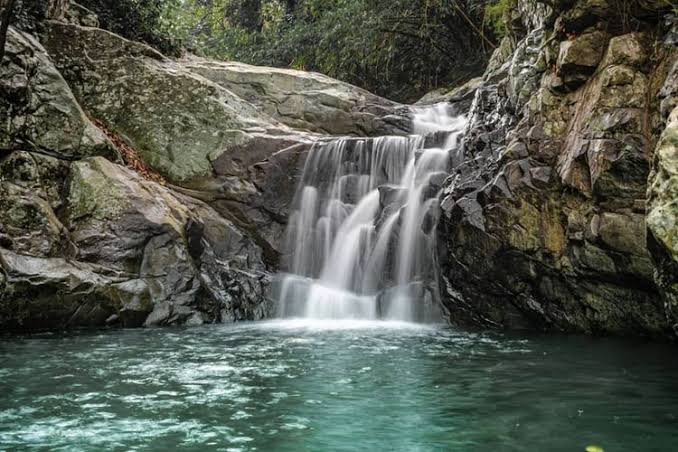

Destinasi Populer Purwakarta

Waduk terbesar di indonesia yang menawarkan panorama alam, wisata air, memancing, hingga area camping.
Lihat Detail
Situ Buleud
Ikon wisata purwakarta yang terkenal dengan taman kota, air mancur sribaduga dan suasana yang nyaman.
Lihat Detail
Parang Gombong
Tempat favorit bagi pencipta alam yang ingin mencoba camping yang bisa melihat pemandangan yang luas.
Lihat Detail
Gunung Lembu
Gunung ini sangat populer di kalangan pendaki pemula karena jalur yang relatif pendek. Pendakian menuju puncak umumnya memakan waktu sekitar 2 hingga 3 jam, melewati vegetasi hutan bambu dan area tanah lapang seperti Pondok Saung Ceria. Di sepanjang perjalanan menuju puncak, terdapat spot ikonik seperti Batu Lembu yang langsung berbatasan dengan jurang dan pemandangan waduk di bawahnya.
Lihat Detail
Curug Tilu
Air Terjun alami dengan udara sejuk yang cocok untuk melepas penat.
Lihat Detail
Situ Wayanayasa
Situ Wanayasa adalah danau alam seluas ±7 hektare di Kecamatan Wanayasa, Purwakarta. Berada di ketinggian 600-800 mdpl, destinasi ini menawarkan udara sejuk dan pemandangan Gunung Burangrang. Daya tarik utamanya meliputi pulau kecil di tengah danau Pasir Mantri yang memuat makam pendiri Purwakarta, RA. Suriawinata
Lihat Detail